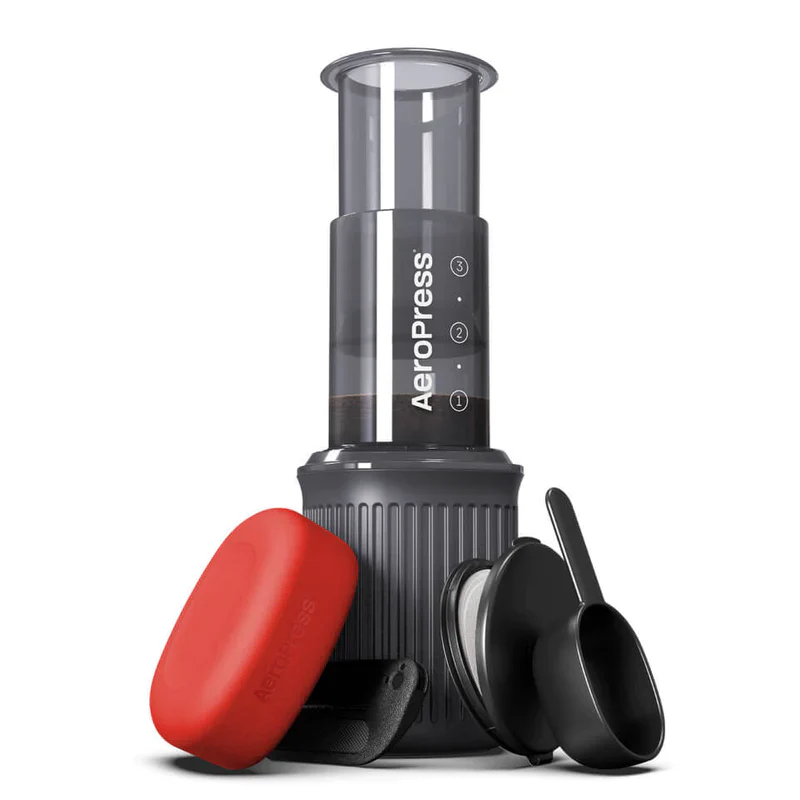

V60 Pour Over
Medium-fine grind, 15g coffee to 250ml water, 2–3 minutes.

French Press
Coarse grind, 20g coffee to 300ml water, steep for 4 minutes.

AeroPress
Fine grind, inverted method, 14g coffee to 220ml water.

Coffee Grinder
Match grind size to method: fine (espresso), medium (V60), coarse (French press).
Grind fresh for best flavour.

Cold Brew
Coarse grind, steep 12–18 hours in the fridge. Start ratio: 1:8 coffee to water,
then dilute to taste.

Moka Pot
Fill base to valve, medium-fine grind (not espresso-fine), brew on low heat.
Remove when it starts to sputter.